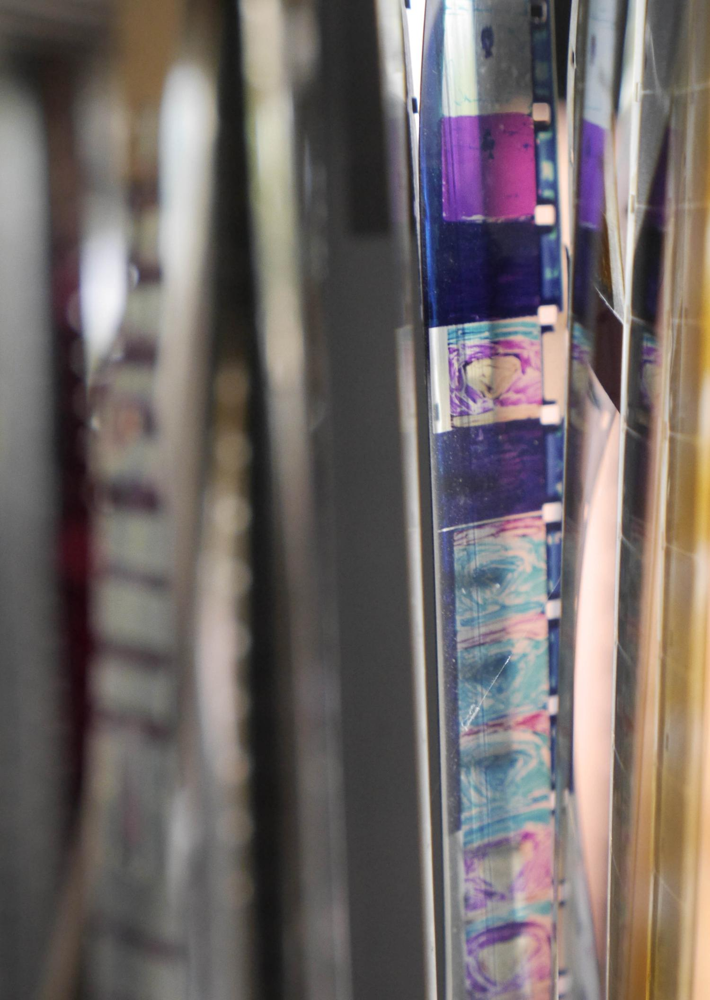
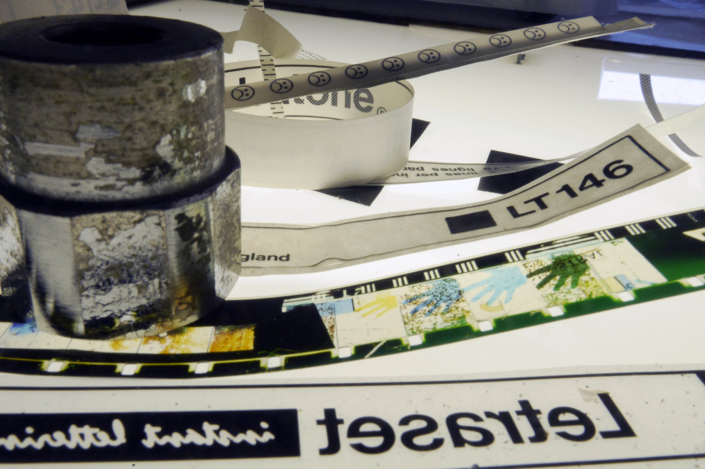

Missing Observer Studies is a time focused online cinema/journal/diary dedicated to the elongation, suspension, and untimeliness of time. Each issue is treated with care, and published indeterminately per the means and welfare of all parties involved.
huner.francis@gmail.com
ig: @huner_francis
©2020-2021
Dirk de Bruyn, Death of Place (annotated)
2018, 16’37 (From: November 17th, 2020)
MOS #4.
by Micah H. Weber
Dirk de Bruyn has been making independent films for over 35 years, working in direct-on-film animation techniques and performance. Additionally, he is a frequent contributor to Senses of Cinema and teaches at Deakin University in Melbourne, Australia.
I was first introduced to de Bruyn's performance and film work almost 10 years ago through an article entitled "Theoretical Perspectives on Expanded Cinema and the 'Cruel' Performance Practice of Dirk de Bruyn." Described as "gut-wrenching," "vulnerable," and "punk," I went in search of this work online with little results save for a few low resolution clips of de Bruyn performing.
What I saw and heard were two/three whirring and clicking film projections. An off-camera hand would move and alter the projected image with sudden jerks and in differing degrees of focus. Overlapping each other, they harmonized in looping and chaotic rhythms. At times a shadow would cut through these images, a hand, an object, disrupting the flow of light, and rendering filmic language, the space of projection, useless in their traditional contexts. Something new I had not experienced prior was happening. These rhythms and puncturing gestures were accompanied by groaning, moaning, and shrieking - the shadow of de Bruyn, creates a space of terror where anything can happen. The space of viewer/artwork is no longer one of consumer and object.
For issue four of Missing Observer Studies we are ecstatic to present an unfinished, and unpublished iteration of de Bruyn's film, Death of Place. In addition to this "annotated" version, de Bruyn has provided us with an introductory note on the history of this work, as well as a thoughtful response from his son Abram de Bruyn, followed by a dialogue between MOS and the artist.
A NOTE FROM THE FILMMAKER
I began Death of Place in the late 90s after both family breakdown and later empty nesting. Its beginnings reminded me of my friend Lee Smith’s experience. He had started his fragile 16mm abstract films like Tin Jan Istra (1994) in the 80s after a relationship ending that left him penniless, homeless, and in precarious circumstances. With a strip of film in hand, he began scratching to find a way back to himself.
Death of Place was also a form of mourning that rebuilt my archive, its fragments and loose ends. It began in my garage, which was physically rebuilt into a studio and office by my friend George Neale. I came up with the title as the digital seemed to remove the material experience of being in a place. The original film was all 16mm stuck together frame by frame with tape and cement, little fragments from discarded works or remnants from other films or bits of leader lying around the studio. I was looking for abrupt perceptual frame by frame changes, clusters of images, and flicker that I had enjoyed in Paul Sharits films. I wanted a physical visual scream to speak my body’s difficulties. I grabbed editing time spasmodically here and there, inserted between the unrelenting demands of daily life. Each fragment had a history that I materially understood or recognized unconsciously, whether it was sound filler from a completed film, passport photographs, or bleached erased material of another image or gesture. These associations piled on top of one another and evolved over the years. A rote cycle of circular gestures was knotted together.
The segments created rhythms that were further worked on, scratched, drawn on, or taped over to develop new intensities. I was compacting my archive and creating clusters of ghosted half-images, afterimages, and perceptual effects. I would repetitively play this stuff on my editing table, often at speed, see other images inside this stream and then physically add those elements to enhance or physically embed those effects further. Robert Breer had introduced me to that technique when I visited him at Cooper Union in the 80s.
As it expanded, this work became further marooned and dislocated. Apart from doing my own film developing, there were no longer any film processing laboratories left in Australia. It became too difficult to finish this work on 16mm film. New production pathways had to be found. I ended up retooling my JK Optical printer, replacing the Bolex with a Panasonic GH2, and transferring 16mm film to digital files on this redundant machine. Because of the digital camera's sensitivity, there was no longer a need to pump loads of light into the image, and I could place a LED light next to the film-strip so that the image clearly captured the surface scratches and dust. Unexpectedly, I was able to bring out detail and material textures resident in the 16mm original that were unavailable in any 16mm projection. This invisibility attracted me as it reminded me of the mechanics of trauma.
As a personal reconstruction, I began to envision the editing process as a science fiction in which I was materially re-assembling strings of DNA. I became familiar with Vilém Flusser's prescient media speculations. For Flusser, technical images 'are not images at all but rather symptoms of chemical or electronic processes.' (Flusser, 2011: 34) These were strings of 'technical images,' dislocated from their origins, undertaking a re-assemblage through body memory.
Death of Place, though published digitally, delivers a concentrated flux of materiality. Technique migrates from the old analog to the new digital realm. This move re-enacts my parents' real physical migration from the old world to the new world, from the Netherlands to Australia in the 50s. In Freedom of the Migrant, Flusser notes that the migrant must process mobility physically through his or her body. But the digital surfer's mobility is superficial and ungrounded. Death of Place tries to bridge that gap.
Each image had been mutilated through various processes to arrive as stanzas of fleeting reflections, like the flickering shadow on the wall of Plato's cave, or the thunderclaps that punctuate James Joyce's Finnegans Wake. Death of Place effervesces through micro observations and afterimages barely visible to the naked eye, traces of an invisible trauma released by our current facile hypermobility.
In this latest iteration, this work is further wrapped in found footage from the Russian Revolution, home movies, the utterings of Marshall McLuhan and Vilém Flusser, and annotated in ways that extend its word-play with a renewed emphasis on the crash that ends the film.
I now understand Death of Place as an attempt to arrive at Flusser's view that 'Images no longer represent the world. [They] are articulations of thoughts.' (Flusser, 2000: 27). The thoughts I have that link at speed can incorporate such textural half images and textures. I may be deluding myself about this, but my archive keeps me company, continues to disintegrate and shapes my memories and thoughts. There is also a relationship here with Rudolph Arnheim's Visual Thinking (1969), which interests me, that deals with earlier forms of such theorising. This is not new but resurfaces in fresh ways through technological churn.
Dirk de Bruyn, 2020References
- Arnheim, Rudolph. (1969) Visual Thinking Berkeley: University of California Press.
- Flusser, Vilém. (2000) Towards a Philosophy of Photography. London: Reaktion Books.
- Flusser, Vilém & Kronenberg, Kenneth (trans.), & Finger, Anke K (ed.) (2003) The freedom of the migrant: objections to nationalism. University of Illinois Press.
- Flusser, Vilém. (2011) Into the Universe of Technical Images. Minneapolis: University of Minnesota Press.
Death of Place (annotated)
2018, 16’37
A Response from Abram de Bruyn to Dirk de Bruyn
Like other film collages you've made, this one is a fascinating mix of layers that puts the audience in the meta-position of their own thinking. Perhaps this is due to the playful deconstruction of language in such pieces. Since this is currently a work in progress, my comments are going to reflect some of my own preferences for further development rather than an assessment of the work.
Meditate on this: the Humpty Dumpty of your background mind. As a viewer, I find myself playing language games alongside your own. Which made me wonder if you ought to make some of this play a little more explicit. For instance, the use of "humpty dumpty" could be expanded into a deeper invitation to such wordplay with the viewer. I think you might be pointing in this direction, but what I find interesting about Humpty Dumpty is the parallel effort we make to put our words back together after they de-compose. Then there are also those vertical moves the mind takes across these word plays. 'What is the sign signifying?' I myself began to play with the thought of 'metaphor is a sign stacked on a sign'. Such games with your films are part of the joy of watching them. While watching this one, and recognizing the meditative quality of such experiences, I began to mentally jumble the word meditate. Out pops: mediation t's meditation. Or some such nonsense. I realize its a dreamlike quality of these films, whether it invites you into such play or puts you there, into your 'background mind' a kind of playground or ballpit for the mind. I appreciate that this is all elemental in your work, especially the play with nonsense or the decomposition into non-sense. Again, my executive mind is wishing only for more nods and winks towards this experience.
Pseudo-signs. What's that Macbeth quote? Sound and the Fury... a tale told by an idiot, full of sound and fury, signifying nothing. I sort of see the opposite of this idiot. It's not an 'idiot mind' from which we pull focus and understanding, your work hints more towards an honest archaeology or perhaps a reverential bordering on mystical play. There is an ethic of care, plainly sensible. Which marks this form of idiocy as different in kind from that of Macbeth’s. My sense is that what makes Macbeth’s idiocy empty and signifying of nothing is that it lacks the ethical strand. What I mean is that at least even the nonsense signal and noise of your work communicates (perlocutionary?) an ethic of care, whereas what Macbeth sees looking back on his days is nothing because this noise lacks even an ethic. I suppose I write this to confront the possibility of ethical pseudo-signs. Even nonsense has some force to it. I take the force of your nonsense games to be an invitation into play. So again, a few more moments that acknowledge that this is what you are in fact doing (if it is!) will be well received. Are we meditating yet? Are we mediating yet? Or maybe: Silence as signal. Or a dig at Wittgenstein perhaps: Whereof one cannot speak, thereof one must be playful.
I didn’t quite pick-up as much of your voice as on other films, like Rote Movie (which is really the touchstone), and perhaps that was just a layer you plan to add in later. I would invite you to use whatever such direct ‘author/maker’ voicing to break the fourth wall instead of what you do in Rote Movie which is to use it as a tool for autobiography or self-talk. That level of self reflectiveness puts the EXPERIENCE of the viewer into a WITNESS and JUDGE mode, whereas I’m suggesting that you look at ways of cultivating the self-experience of the viewer. Maybe you were asking me to play with this material? Maybe that’s what I will try.
On a personal level I really love the family footage, especially the shots of Michael Lee burying Kees and I in the cut grass. That really is quite beautiful and joyous. On the other hand, I find the crash test dummy footage upsetting. Especially some of those cars where they crumple like cans. The violence of that image is jarring. It’s certainly compelling, but my worry is that it seems so potent that it appears to project a clearer meaning. This, along with the title, are confusions for me. Of course, the work itself is a growing entity finding its way, I just would prefer aesthetically something more inviting. You’ve done bleak well enough with that gunshot in Rote Movie. What else is there?
Abram de Bruyn, 2020

MOS in Dialogue w/ Dirk de Bruyn
In your note to this film, you describe the origins of this work and the history laden in the labor of its making. Rather than attempting to further a line of inquiry in service of contextualizing the work any more than you already have, I’d like to focus these questions on some selfish interests on my part.
Upon each viewing of this film I find myself thinking about your use of image, text, and sound, in plurality and crashing disaster, as an overflowing rush which asks that I think about these materials with my body, and physicality, instead of with my mind. The result renders expository language as unhelpful, or at the very least, inadequate.
I’m wondering if you can talk a little about how you see this work operating on the level of physical touch, namely as a bodily relation of attention vis a vis moving images?
Thanks for your description of these moving images in such dynamic terms. I like this idea of a systems crash and the inadequacy of language. My body and its perceptual apparatus have been systematically crashed in different periods of my life and these films are its residue. The Humpty Dumpty that has been put back together again. I think these unsettling effects sit at a shifting boundary between understanding and trauma which I am always looking for a way out of. Each technological shift delivers new traumas or disorientations that have to be negotiated and are over time.
In terms of touch these film strips though digital originate materially and have been spliced together laboriously with tape splices. My first film, Running (1976) had a double-sided tape splice every four frames. With such splices the fingers rub with pressure on the filmstrip to activate its adhesive, an aggressive and assertive touch. This is a residual gesture and its memory remains attached to these images as they migrate into the digital realm. Flicker and the single frame leave afterimages, which bruise the eye.
Like smell, touch and sound deliver their meanings with a greater immediacy than narrative sequences of images. Touch is intimate and immediate and can be suggested by abstracted forms. When you kiss you are too close to see, for example, but the blur of texture is critical. Touch plumbs the emotions, a direct line to the body. It is imperative to deliver sensation to the viewer instantly, before thinking through takes hold. Francis Bacon has noted this intent for his paintings which have an immediate material effect on me. I want to understand and orchestrate this visceral language as a means of dealing with information overflow in a speeded-up world. To say it in another way, I intend my images to behave sonically like a field of movement, whose speed forces a multiplicity of readings on the viewer that brings you back to the body before critical thinking processes your experience further.
How does sound factor into your thinking? You use image, text, and sound intermittently as the primary mover, seemingly ignoring their own media specificity. At times they talk over each other, sometimes they trade places, each imitating the other—creating a space in which images read more like sounds, sounds like images, etc.
There is a total but dialogic often conflictual effect here that your question understands. I need my images to behave sonically, I look for those rhythms that are really sourced from my body, my gestures and turns of phrase, the way I talk, etc. Recently I found Richard Cavell’s McLuhan in Space: A Cultural Geography (2002) useful in thinking through this idea of acoustic space. Although related, this is much more integrated and multi-levelled than Fischinger’s Visual Music.
Popular and contemporary music that I grew up with, at its best, synthesized such moments where a cluster of words and a riff became interchangeable and remembered as one in some form of deep emotive memory, instantly retrievable. This was how I wanted to experience my culture, before all this was prescribed and manipulated by music videos. Carla Bley and Don Cherry’s Escalator Over the Hill impacted me at the time as did Moondog’s 1969 Album, the Yardbirds spin-off Renaissance (1969) and the Pretty Things Parachute (1970). I can still recall the feeling listening to Alice Coltraine’s Journey in Satchidananda (1971) while watching The Supremes perform on television on mute, during an acid trip. And then there was the disruptive sound poetry performed by friends in Melbourne that came out of the Punk Scene in the 8os. There is an autobiographic turn embedded in the way I source these intimacies.
An important early influence were my collaborations with musician Michael Luck. We had this dialogue going, where I would use of his tracks for one of my direct on film series in the 80s like Vision (1985) and one of his songs would motivate me to make another film, often out of an unused archive of material I was continually spinning out and experimenting with.
Throughout this film—and you touch upon it briefly in your writing—there are images and texts referring to revolution. Uprising is frequently presented in the popular media as violent, chaotic, and without reason, when often there is a strategy at work, operating horizontally and through languages of refusal that lead to action rather than analysis. Can you talk a little about how politics enters your practice as a filmmaker?
Surveillance capitalism operates and harvests our choices online on the micro-level of the intimate gesture; how often you move your mouse, the groupings of your clicks and the trajectory of your searches, and where you perform this grazing. Computers process this information with an immediacy at speed to mix and match your behavior with every other individual in the world. This is how our bodies are being colonized today. To counter or respond to this level of manipulation we need a new language that embraces what Marshall McLuhan has identified as pattern recognition. I pack and layer my images and sounds into these bursts and half sentences. I am looking for a level of resistance that articulates its meanings on this level and speed. How do I move forward on this? Can this be learnt, developed for social use?
There is a celebrated image in the silent comedy Modern Times (1936) where Charlie Chaplin’s body moves through the cogs of factory machinery, which looks a bit like a film-strip moving through a Bolex 16mm Movie Camera. This is a productive representation of the industrialization’s impact on the body. What is the impact on the body of the digital ‘revolution’?
Vilem Flusser has noted, and I quote him at the start of the film, that every revolution is at its base a technical revolution. Consequently, I understand every new technology as being essentially traumatic at its inception and must be embraced with an eventual re-alignment or re-balancing of the senses. I think the current re-balancing prioritizes those senses that communicate efficiently in less time: touch and sound. I understand this activity as a political act. Learn to speak the language of the oppressor and turn it back on itself.
This question has to do with making personal/private work while also mitigating the possibility of its public rejection. Something I have appreciated about your work is that you don’t seem to be only bound to formal interests—your films don’t read to me as only an exploration of materials, but that the exploration of material is also an internal, biographic exploration. This is something I can relate to, so I’m wondering if you can talk a little about how you go about making work that speaks to you (as perhaps the first viewer) while also presenting the work internationally to a diverse audience—an audience that always holds the potential for rejection.
Yes these are my materials, often to which all kinds of memories and experiences have attached themselves over time, which continually get re-shuffled, re-ordered and re-layered. This annotated version Death of Place is about something that has died but is continually re-gurgitated into something else, that expands into a stupefied academic rattle, referencing and word play. I must say that having to stand in front of a group of students to explain what I do has been a welcome challenge that has found its way into my work. There is always an element of probable rejection in that dialogue.
There is a pain and loss being processed here. It is about survival. These re-orderings, often at the level of the single frame, like I said before is like working at level of my own DNA. Perhaps this relates to cellular memory. This work occupies the margins, and as a consequence I do. Luckily my academic role has forced me to defend and explain my marginal practice and learn a language of the oppressor to speak to its discounted concerns.
These margins have a tentative and shifting audience that has metamorphosed over the decades. There is a greater appetite for instant communication. Shortening attention spans, coupled to a greater facility for unpacking complex images and sounds over short periods of time have influenced the complexity and length of my films. I hope I reach for an audience that wants to be challenged and push these boundaries further. Audiences are important and necessary, of course, but they are not a primary goal. But I enjoy other experimental animation and a sense of community it can create by placing your work in relation to others. I have long been a fan of open screenings, and ran them for decades in Melbourne, enjoyed the surprises they bring, the parallax of personality and art that it brought into focus.
Going back to my first question, it’s hard for me not to input my own experiences in some sense on this work. Much of what I understand in your films is an expression of someone working through a traumatic experience. I spent a decade from my teens into my late 20’s as a primary care giver for a terminally ill parent. So I will often have dreams about receiving a terminal diagnosis myself, or I will realize I am living (unconsciously) as if I am terminally ill in my day to day experiences. The repetition of the crash test dummies, and the sequences of your son playing, similarly read to me as a re-creation/performance/rehearsal and living with, not only an embodied trauma, but a projection of intergenerational trauma.
Thanks for that insight and connecting the impact of daily life on the way we perform and accommodate our traumas. I certainly understand these spheres as connected and the importance of growing through its gaps and cracks. I am committed to enunciating a language that allows me to do that. The insistence of repetition is a useful tool in locating and enunciating trauma. I answer more fully below.
What does working in time-based art do for you in thinking through these relationships?
Yes, intergenerational trauma. My parents migrated to Australia from the Netherlands when I was 8 years old. My father never dealt with this shift and ended having a mental breakdown which disintegrated family life. I ended up thinking of this move for my parents, escaping post-war Europe, as a move from the ‘old’ world to the ‘new’. I later thought of my own adult shift into the ‘new’ digital as a simulation of my parents earlier move, one which I also identify in Vilem Flusser’s migration to Brazil from Prague. This family dislocated trauma is addressed in the biographical documentary Conversations with My Mother (1990), which is completely devoid of visual effects. Our move to Australia also meant that I was removed from a hidden situation of Sexual Abuse at the hands of my Aunt (my father’s sister) and Uncle. I had buried these events but struggled them to light when I became a father myself to three sons and a visit to the Netherlands in the 80s. Traum A Dream (2002) elusively documents part of that remembering. Hands and sexual abuse are inexorably linked. Their relation provides an unsettling insight into the tactility of my abstract films. The testing logic of forgetting, denial and remembering, as you intuit, is another way into these abstracted animations and drives their political intent. These childhood traumas have also revisited my sons, one of whom has been diagnosed as schizophrenic. There has also been sexual abuse at the hands of a family friend.
Strategies for making sense of these situations and dealing with them cut across personal and technological lines. The moving image affords a shifting flexible, layered and dialogic language for me with which to formulate a direct way through, to not perform as a victim. The pain is transformed into something else, a chant or a song of resistance that runs deep. That is what my moving image practice now aspires to. On understanding this intergenerational position and effect, I found Gunvor Nelson’s Red Shift (1984) productive. It also goes without saying that I love my children and protect them as much as I can. I also understand now that my father felt the same way and re-read his disconcerting behaviors through that lens.
Dirk de Bruyn
dirk.debruyn@deakin.edu.au
FILMOGRAPHY
academia
VIMEO

(ALL IMAGES COURTESY THE ARTIST)
Missing Observer Studies
edited by M. Weber
huner.francis@gmail.com
← Browse the Catalogue